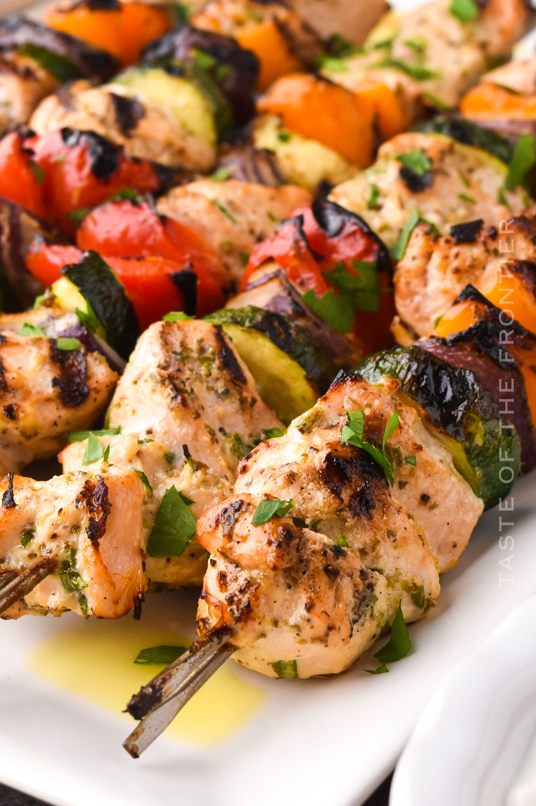

LasaGrilled Chicken Kabobs Recipe

Description
Enjoy the delightful flavors of Grilled Chicken Kabobs. Tender chicken marinated in a flavorful blend of yogurt, olive oil, and spices, paired with succulent red onions. These juicy and tasty kabobs are perfect for your next barbecue or gathering.
Ingredients
- 1 cup plain whole milk Greek yogurt
- 2 tablespoons extra-virgin olive oil
- 2 teaspoons paprika
- ½ teaspoon cumin
- ⅛ teaspoon cinnamon
- 1 teaspoon crushed red pepper flakes (reduce to ½ teaspoon for less heat)
- Zest from one lemon
- 2 tablespoons freshly squeezed lemon juice, from one lemon
- 1¾ teaspoons salt
- ½ teaspoon freshly ground black pepper
- 5 garlic cloves, minced
- 2½ to 3 pounds boneless skinless chicken thighs, trimmed of excess fat and cut into 1½-inch pieces (see note)
- 1 large red onion, cut into 1-inch chunks
- Vegetable oil, for greasing the grill
Steps
- In a medium bowl, combine the yogurt, olive oil, paprika, cumin, cinnamon, red pepper flakes, lemon zest, lemon juice, salt, pepper, and garlic.
- Line a baking sheet with aluminum foil for easy clean-up. Thread the chicken onto metal skewers, folding if the pieces are long and thin, alternating with the red onions. Be sure not to cram the skewers. (Note: You'll need between 6-8 skewers.) Place the kabobs on the prepared baking sheet. Brush the marinade all over the meat, coating well. Cover and refrigerate at least eight hours or overnight.
- Preheat the grill to medium-high heat. To grease the grill, lightly dip a wad of paper towels in vegetable oil and, using tongs, carefully rub over the grates several times until glossy and coated.
- Grill the chicken kabobs until golden brown and cooked through, turning the skewers occasionally, 13 to 15 minutes. The yogurt marinade makes these kabobs prone to sticking to the grill grates; if necessary, use a metal BBQ spatula to scrape underneath the kabobs and release them.
- Transfer the kabobs to a platter and serve.